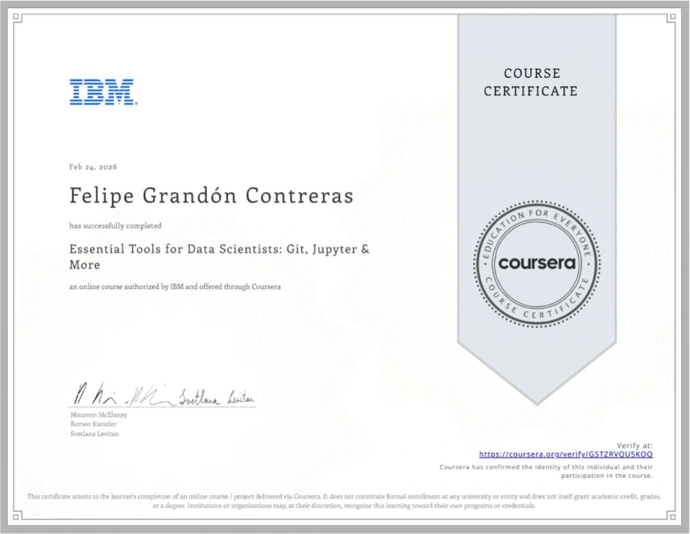

Concept illustration
Concept illustrationInnovation · conceptual proposal
Wireless Charging Deskpad
Exploration of a work surface with wireless power transfer.

COMPUTER SCIENCE · CHILE
Computer science student interested in software development, data science and research. I enjoy learning, exploring ideas and turning them into projects.
A look at my background and the tools I work with.
Engineering, computing and continuous learning.
↗



Diplomas and official credential links.
↗Programming, data and version control.
Explore my profile in a one-page document.
↗
Selected academic projects and innovation concepts.
Concept illustrationExploration of a work surface with wireless power transfer.
 Concept illustration
Concept illustrationStudy of graphs, algorithms and optimization models.
 Concept illustration
Concept illustrationSystems programming and concurrency fundamentals.
Interested in projects, academic collaboration and professional opportunities. Send me a message using this form.
View GitHub ↗